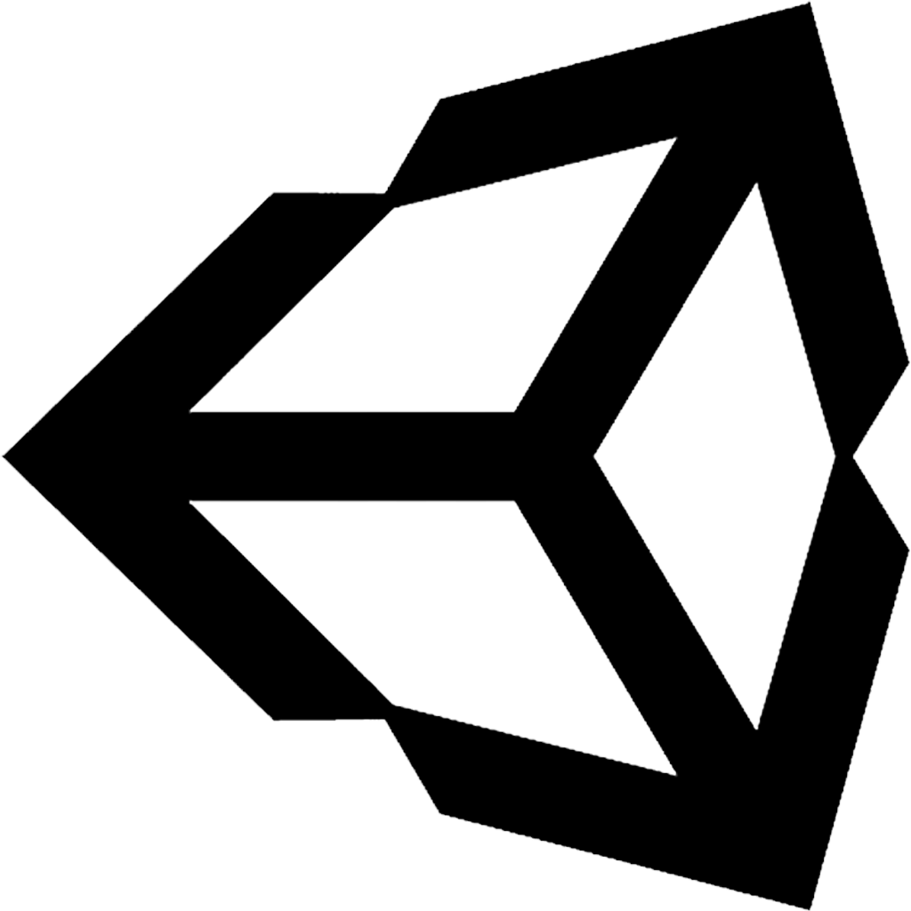

A Piece of Planet
This project was made in a small group of three artists and two programmers, including me. Being a game made for a course at DAE, we had one semester to make it - from start to finish.
Featuring a spherical, tiled planet, you play as an astronaut protecting a scientist from the inhabitants of the planet. Killed enemies have a chance of dropping a bomb, which explodes
if not defused in time. Bit by bit, the explosions will cause the planet to literally fall apart, making the terrain more and more dangerous to the player.


What's your life worth?
In this bullethell, you stumble upon a special bow, locked into a chest. Together with the talking weapon, you make your way trough chambers filled with enemies in order to finally kill the last boss.
Along the road, you will find magical fountains, providing you with the opportunity to upgrade your bow - but beware, the upgrade will use your hp as catalyst.
What's your life worth? was made by me, entirely from scratch. This is another project from DAE and we had about 6 weeks to work our way from two random words to a fully working slice of a game.



Combat Arena
While this project has some gaming elements, this was more of a learning experience then an actual attempt at making a full blown game. Again a project made for a course at DAE, this one took me about 7 weeks.
It was originally meant to feature a simple, yet complete combat system, with the option for combo's, dodging, and a heavy attack for both player and AI. However, while working on this, it became painfully clear
how little I actually knew of UE's animation system and all its possibilities. I then decided to dive into animation instead, working with combat animations but leaving the combat system out of it.

Storywriting
What can I say? I write stories. It's as simple - and not as simple - as that. My head is constantly filled with characters, worlds and random ideas. Some of them I try to write down, others I just
juggle around, reshaping it into something else, and still others become full-blown stories. Most of these are written in Dutch, my mother tongue, but a few I either tranlsated or were in English from the
start.
While school has put an abrupt halt to writing, as I simply did not have enough time for it anymore, my imagination hasn't been quiet, often adding onto or giving brand new ideas to other students.
I also tried to at least use my writing skills in the few occasions school gave us. For example, the dev logs on A Piece of Planet are all written by me.